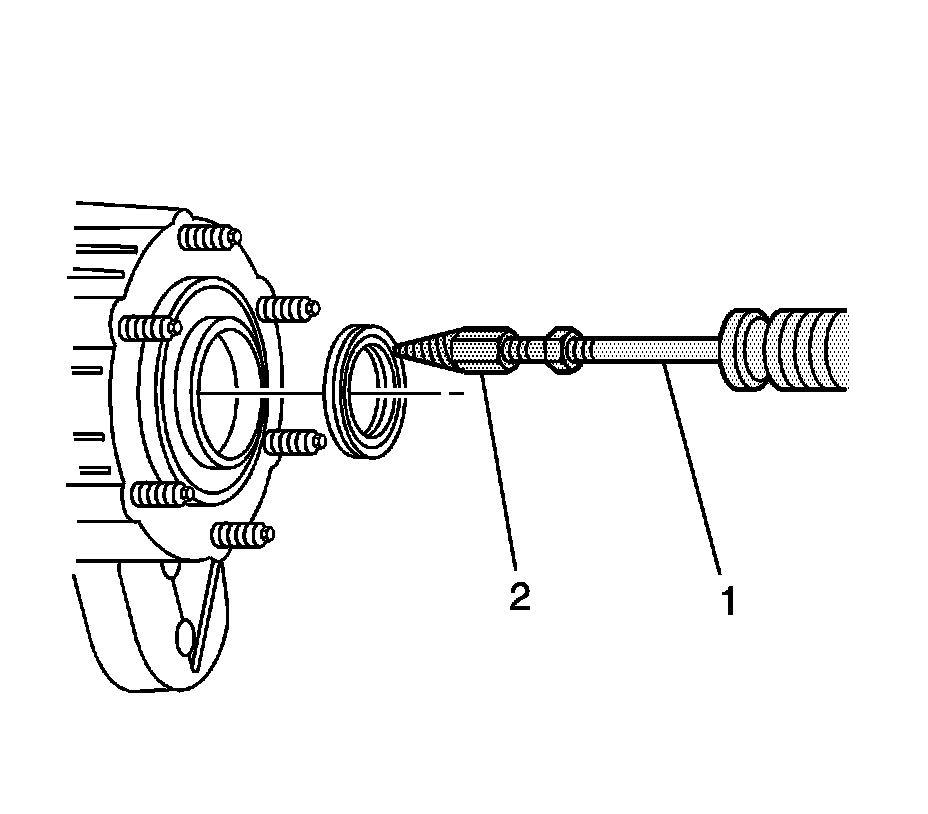
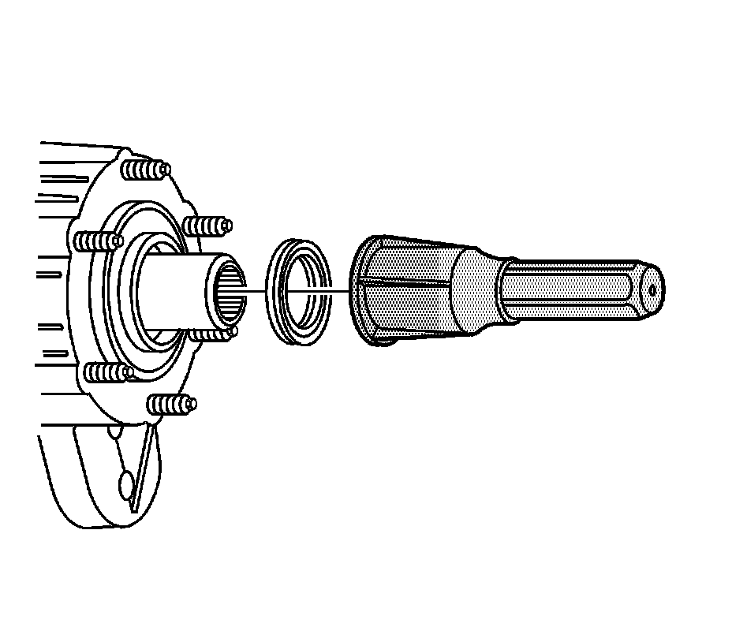

Transfer Case Input Shaft Seal Replacement
Transfer Case Input Shaft Seal Replacement
Tools Required
^ J 36825 Output Shaft Oil Seal Remover
^ J 23907 Slide Hammer with Bearing Adapter
^ J 42738 Front Output Shaft Seal Installer
Removal Procedure

1. Remove the transfer case.
Important: It may be necessary to use a sharp punch in order to poke a hole into the seal prior to inserting J 36825.
2. Using the J 23907 (1), and J 36825 (2), remove the input seal.
Installation Procedure

1. Using the J 42738, install the input shaft seal.
2. Install the transfer case.